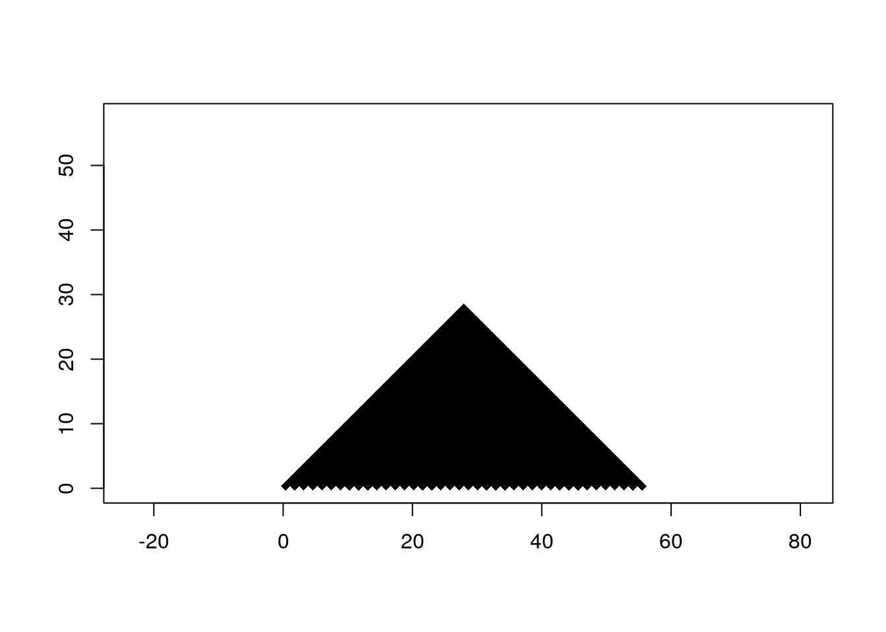
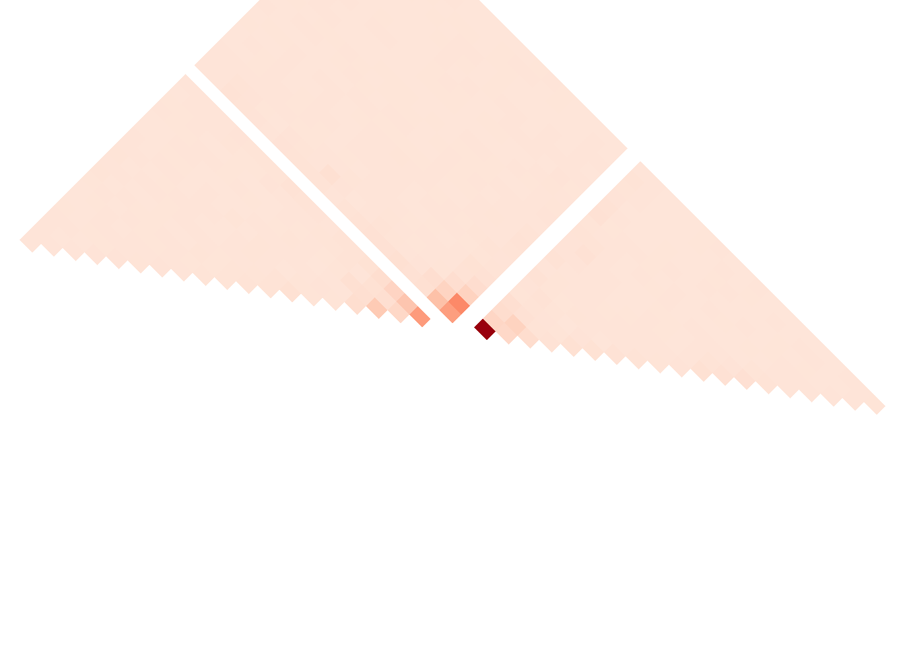

Last updated: 2023-07-12
Checks: 7 0
Knit directory: LSCI/
This reproducible R Markdown analysis was created with workflowr (version 1.7.0). The Checks tab describes the reproducibility checks that were applied when the results were created. The Past versions tab lists the development history.
Great! Since the R Markdown file has been committed to the Git repository, you know the exact version of the code that produced these results.
Great job! The global environment was empty. Objects defined in the global environment can affect the analysis in your R Markdown file in unknown ways. For reproduciblity it’s best to always run the code in an empty environment.
The command set.seed(20211101) was run prior to running
the code in the R Markdown file. Setting a seed ensures that any results
that rely on randomness, e.g. subsampling or permutations, are
reproducible.
Great job! Recording the operating system, R version, and package versions is critical for reproducibility.
Nice! There were no cached chunks for this analysis, so you can be confident that you successfully produced the results during this run.
Great job! Using relative paths to the files within your workflowr project makes it easier to run your code on other machines.
Great! You are using Git for version control. Tracking code development and connecting the code version to the results is critical for reproducibility.
The results in this page were generated with repository version ee1eb00. See the Past versions tab to see a history of the changes made to the R Markdown and HTML files.
Note that you need to be careful to ensure that all relevant files for
the analysis have been committed to Git prior to generating the results
(you can use wflow_publish or
wflow_git_commit). workflowr only checks the R Markdown
file, but you know if there are other scripts or data files that it
depends on. Below is the status of the Git repository when the results
were generated:
Ignored files:
Ignored: .Rhistory
Ignored: .Rproj.user/
Ignored: analysis/disqus.html
Ignored: code/random/
Ignored: output/figs/
Note that any generated files, e.g. HTML, png, CSS, etc., are not included in this status report because it is ok for generated content to have uncommitted changes.
These are the previous versions of the repository in which changes were
made to the R Markdown (analysis/NYGC_new_vis.Rmd) and HTML
(docs/NYGC_new_vis.html) files. If you’ve configured a
remote Git repository (see ?wflow_git_remote), click on the
hyperlinks in the table below to view the files as they were in that
past version.
| File | Version | Author | Date | Message |
|---|---|---|---|---|
| Rmd | ee1eb00 | Andy Beck | 2023-07-12 | wflow_publish(c("analysis/NYGC_control_samples.Rmd", "analysis/NYGC_rank_re_vals.Rmd", |
library(tidyverse)
library(Matrix)
library(conflicted)
conflicts_prefer(tidyr::expand)
conflicts_prefer(tidyr::pack)
conflicts_prefer(tidyr::unpack)
cbPalette <- c("#999999", "#E69F00", "#56B4E9", "#009E73", "#F0E442", "#0072B2", "#D55E00", "#CC79A7", "#000000")
subtype_print_names <- function(st){
if(str_starts(st, "AT")){
return(paste0("A → ", str_sub(st, 4, 4)))
} else if(str_starts(st, "GC")){
return(paste0("C → ", str_sub(st, 5, 5)))
} else{
return(paste0("CpG → ", str_sub(st, 9, 9), "pG"))
}
}Here in this document I will attempt to collect publication-quality figures for the local sequence context manuscript.
#' Read position level single position results for a single population-subtype pair
#'
#' @param pop Superpopulatiion
#' @param subtype Mutation subtype
#' @param data_dir Root directory of model results
#' @return data.frame with single position results for a population-subtype pair
sp_subtype_pop <- function(pop, subtype, data_dir = "/net/snowwhite/home/beckandy/research/1000G_NYGC_LSCI/output/single_pos/"){
fname <- paste0(data_dir, pop, "/", subtype, ".csv")
df <- read_csv(fname, show_col_types = FALSE) %>%
rowwise() %>%
mutate(re = dev / (2 * (singletons + controls)))
return(df)
}
#' Read position level single position results for all subtypes for a single population
#'
#' @param pop Superpopulation
#' @param data_dir Root directory of model results
#' @return Dataframe with all single-position position-level statistics for a population
sp_pop_allST <- function(pop, data_dir = "/net/snowwhite/home/beckandy/research/1000G_NYGC_LSCI/output/single_pos/"){
df <- read_subtype_pop_res(pop, "AT_CG", data_dir = data_dir)
df$subtype <- "AT_CG"
for(st in c("AT_GC", "AT_TA",
"GC_AT", "GC_TA", "GC_CG",
"cpg_GC_AT", "cpg_GC_TA", "cpg_GC_CG") ) {
df2 <- read_subtype_pop_res(pop, st, data_dir = data_dir)
df2$subtype <- st
df <- bind_rows(df, df2)
}
return(df)
}
#' Read nucleotide-level residulas for single position models
#'
#' @param pop Superpopulation (or ALL)
#' @param subtype mutation subtype
#' @param rp Relative position
#' @param data_dir Root directory of single position model results
sp_subtype_pop_resid <- function(pop, subtype, rp, data_dir = "/net/snowwhite/home/beckandy/research/1000G_NYGC_LSCI/output/single_pos/resid/"){
f_name <- paste0(data_dir, pop, "/", subtype, "_rp_", rp, ".csv")
df <- read_csv(f_name,show_col_types = FALSE)
return(df)
}
#' Read nucleotide-level residulas for single position models across a range of relative positions
#'
#' @param pop Superpopulation (or ALL)
#' @param subtype mutation subtype
#' @param size How many positions up/downstream to read data from
#' @param data_dir Root directory of single position model results
sp_subtype_pop_range_resid <- function(pop, subtype, size = 10, data_dir = "/net/snowwhite/home/beckandy/research/1000G_NYGC_LSCI/output/single_pos/resid/"){
if(str_starts(subtype, "cpg")){
pos.names <- c(-size:-1, 2:size)
} else{
pos.names <- c(-size:-1, 1:size)
}
results <- lapply(pos.names, function(x) NULL) %>% setNames(pos.names)
for(i in names(results)){
results[[i]] <- read_subtype_pop_resid(pop, subtype, i, data_dir)
results[[i]]$pos <- i
}
df <- bind_rows(results)
return(df)
}tp_subtype_pop_res <- function(pop, subtype, data_dir = "/net/snowwhite/home/beckandy/research/1000G_NYGC_LSCI/output/two_pos/"){
fname <- paste0(data_dir, pop, "/", subtype, ".csv")
df <- read_csv(fname, show_col_types = FALSE) %>%
rowwise() %>%
mutate(re = dev / (2 * (singletons + controls)))
return(df)
}
tp_pop_res <- function(pop, data_dir = "/net/snowwhite/home/beckandy/research/1000G_NYGC_LSCI/output/two_pos/"){
df <- read_subtype_pop_res(pop, "AT_CG", data_dir = data_dir)
df$subtype <- "AT_CG"
for(st in c("AT_GC", "AT_TA",
"GC_AT", "GC_TA", "GC_CG",
"cpg_GC_AT", "cpg_GC_TA", "cpg_GC_CG") ) {
df2 <- read_subtype_pop_res(pop, st, data_dir = data_dir)
df2$subtype <- st
df <- bind_rows(df, df2)
}
return(df)
}subtype <- "AT_GC"
df_s <- sp_subtype_pop("ALL", subtype)
df_t <- tp_subtype_pop_res("ALL", subtype)
head(df_s)# A tibble: 6 × 5
# Rowwise:
dev singletons controls offset re
<dbl> <dbl> <dbl> <dbl> <dbl>
1 475580. 14411403 72057013 -1 0.00275
2 1661371. 14411403 72057018 1 0.00961
3 804403. 14411403 72057011 -2 0.00465
4 65421. 14411404 72057016 2 0.000378
5 29140. 14411400 72057003 -3 0.000169
6 118234. 14411404 72057005 3 0.000684head(df_t)# A tibble: 6 × 6
# Rowwise:
dev singletons controls rp1 rp2 re
<dbl> <dbl> <dbl> <dbl> <dbl> <dbl>
1 1715. 14411396 72056853 -20 -19 0.00000992
2 1273. 14411395 72056851 -20 -18 0.00000736
3 802. 14411396 72056852 -20 -17 0.00000464
4 352. 14411395 72056851 -20 -16 0.00000204
5 469. 14411396 72056853 -20 -15 0.00000271
6 358. 14411396 72056848 -20 -14 0.00000207Try shaping two-position results into a matrix:
df_t_mat <- as.matrix(sparseMatrix(i = df_t$rp2 + 21, j = df_t$rp1 + 21, x = df_t$re))
df_t_mat[lower.tri(df_t_mat)] <- NA
nr <- nrow(df_t_mat)
nc <- ncol(df_t_mat)
d <- sqrt(nr^2 + nc^2)
d2 <- 0.5 * d
plot(NA, type="n", xlim=c(0, d), ylim=c(0, d), xlab="", ylab="", asp=1)
rasterImage(as.raster(df_t_mat),
xleft=d2, xright=d2+nc, ybottom=-d2, ytop=-d2+nr,
interpolate=FALSE, angle=45)
gg1 <- df_t %>%
ggplot(aes(x = rp2, y = rp1, fill = re)) +
geom_tile() +
theme_void() +
scale_fill_distiller(palette = "Reds", direction = 1) +
theme(legend.position = "none", plot.margin = unit(c(1, 1, 1, 1), "cm"))
print(gg1, vp = grid::viewport(angle = 135))Warning in grid.Call.graphics(C_setviewport, vp, TRUE): cannot clip to rotated
viewport
sessionInfo()R version 4.3.1 (2023-06-16)
Platform: x86_64-pc-linux-gnu (64-bit)
Running under: Ubuntu 18.04.6 LTS
Matrix products: default
BLAS: /usr/lib/x86_64-linux-gnu/openblas/libblas.so.3
LAPACK: /usr/lib/x86_64-linux-gnu/libopenblasp-r0.2.20.so; LAPACK version 3.7.1
locale:
[1] LC_CTYPE=en_US.UTF-8 LC_NUMERIC=C
[3] LC_TIME=en_US.UTF-8 LC_COLLATE=en_US.UTF-8
[5] LC_MONETARY=en_US.UTF-8 LC_MESSAGES=en_US.UTF-8
[7] LC_PAPER=en_US.UTF-8 LC_NAME=C
[9] LC_ADDRESS=C LC_TELEPHONE=C
[11] LC_MEASUREMENT=en_US.UTF-8 LC_IDENTIFICATION=C
time zone: America/Detroit
tzcode source: system (glibc)
attached base packages:
[1] stats graphics grDevices utils datasets methods base
other attached packages:
[1] conflicted_1.2.0 Matrix_1.5-4.1 lubridate_1.9.2 forcats_1.0.0
[5] stringr_1.5.0 dplyr_1.1.2 purrr_1.0.1 readr_2.1.4
[9] tidyr_1.3.0 tibble_3.2.1 ggplot2_3.4.2 tidyverse_2.0.0
[13] workflowr_1.7.0
loaded via a namespace (and not attached):
[1] gtable_0.3.3 xfun_0.39 bslib_0.5.0 processx_3.8.1
[5] lattice_0.21-8 callr_3.7.3 tzdb_0.4.0 vctrs_0.6.2
[9] tools_4.3.1 ps_1.7.5 generics_0.1.3 parallel_4.3.1
[13] fansi_1.0.4 highr_0.10 pkgconfig_2.0.3 RColorBrewer_1.1-3
[17] lifecycle_1.0.3 farver_2.1.1 compiler_4.3.1 git2r_0.32.0
[21] munsell_0.5.0 getPass_0.2-2 httpuv_1.6.11 htmltools_0.5.5
[25] sass_0.4.6 yaml_2.3.7 later_1.3.1 pillar_1.9.0
[29] crayon_1.5.2 jquerylib_0.1.4 whisker_0.4.1 cachem_1.0.8
[33] tidyselect_1.2.0 digest_0.6.31 stringi_1.7.12 labeling_0.4.2
[37] rprojroot_2.0.3 fastmap_1.1.1 grid_4.3.1 colorspace_2.1-0
[41] cli_3.6.1 magrittr_2.0.3 utf8_1.2.3 withr_2.5.0
[45] scales_1.2.1 promises_1.2.0.1 bit64_4.0.5 timechange_0.2.0
[49] rmarkdown_2.22 httr_1.4.6 bit_4.0.5 hms_1.1.3
[53] memoise_2.0.1 evaluate_0.21 knitr_1.42 rlang_1.1.1
[57] Rcpp_1.0.10 glue_1.6.2 rstudioapi_0.14 vroom_1.6.3
[61] jsonlite_1.8.4 R6_2.5.1 fs_1.6.2